Core NLP Tasks: From Named Entity Recognition to Text Classification
Concepts, modern models, and a case study in public health
DRM, Université Paris-Dauphine, Université PSL, CNRS
Part 1: Named Entity Recognition (NER)
What is Named Entity Recognition?
- Definition: Named Entity Recognition (NER) is an information extraction task (Goyal, Gupta, and Kumar 2018) in Natural Language Processing (NLP) for identifying entities like names of people, locations, organizations, dates, and numerical expressions within text.
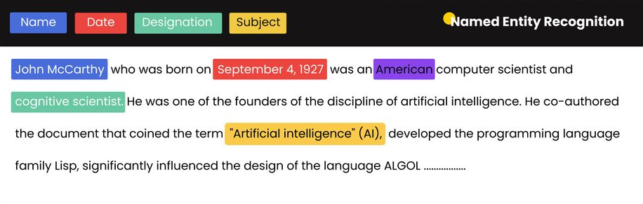
A Brief History of NER
- Early Contributions: Lisa Rau’s (1991) work on extracting company names was pioneering, addressing the challenges posed by unknown words in NLP tasks.
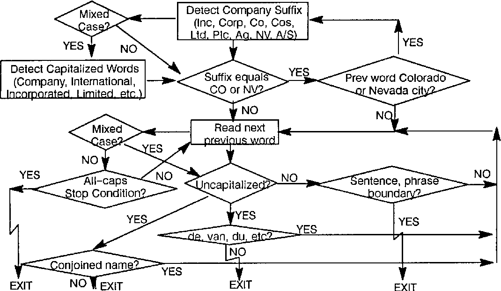
Origins: The term “Named Entity” was formally introduced in the Sixth Message Understanding Conference (MUC-6), where it was recognized as essential for extracting structured information (Grishman and Sundheim 1996).
Evolution: Methods evolved from rule-based approaches to machine learning and eventually deep learning models (Nadeau and Sekine 2007; Liu, Chen, and Xia 2022).
Advanced NER: The GliNER Model
- Generalist and Lightweight Model for Named Entity Recognition (Zaratiana et al. 2024)
- A modern, zero-shot NER model that can identify any entity type without being explicitly trained on it.
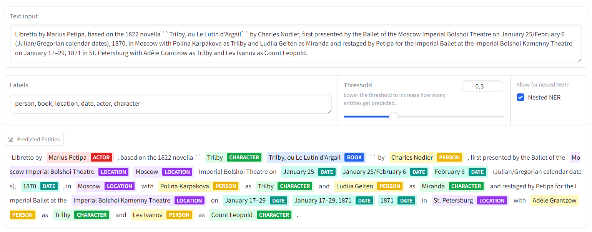
GliNER: Benchmark Performance
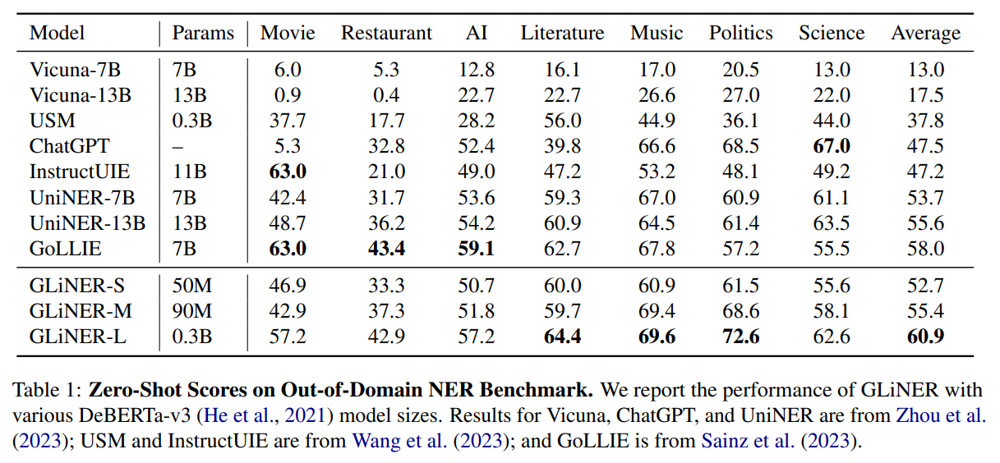
Fine-tuning a Custom NER Model
The real power of models like GliNER is the ability to fine-tune them for a specific domain.
Let’s walk through the process of creating a custom model for detecting COVID-19 vaccine side effects.
Step 1: Labeling Data
It all starts with high-quality annotated data. Tools like Label Studio are industry standard.
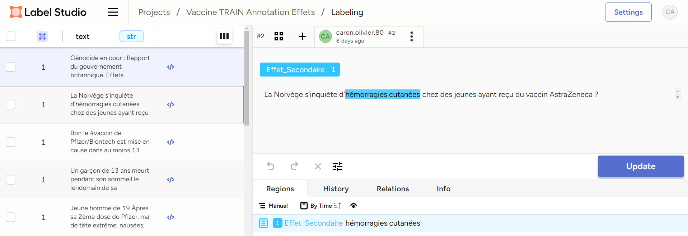
Finetuning - Upload annotaded data
I used the GliNER Studio Colab notebook (Stepanov and Shtopko 2024) from Knowledgator.
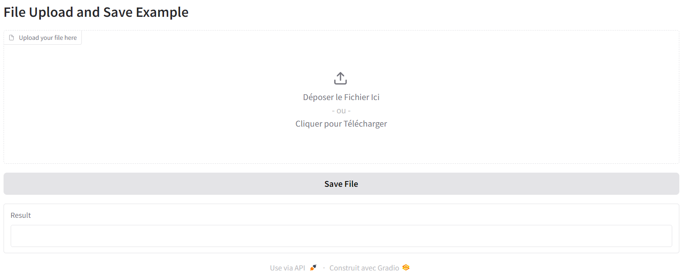
Finetuning - Train the model
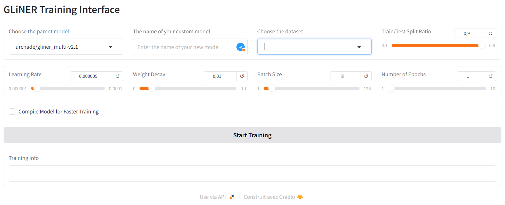
Finetuning - gliner_multi-v2.1
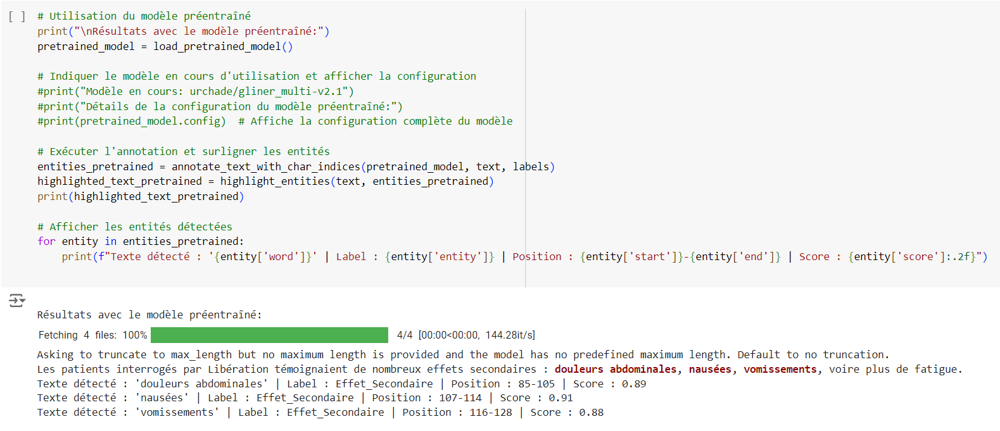
Finetuning - Custom model for Covid-19 vaccines’ side effects
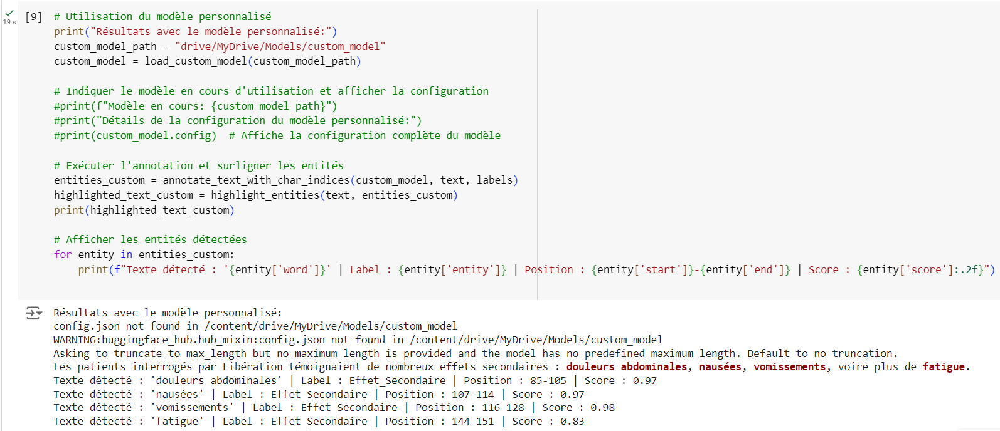
Pharmaceutical Brands
| Pfizer | AstraZeneca | Moderna | Sanofi | BioNTech |
|---|---|---|---|---|
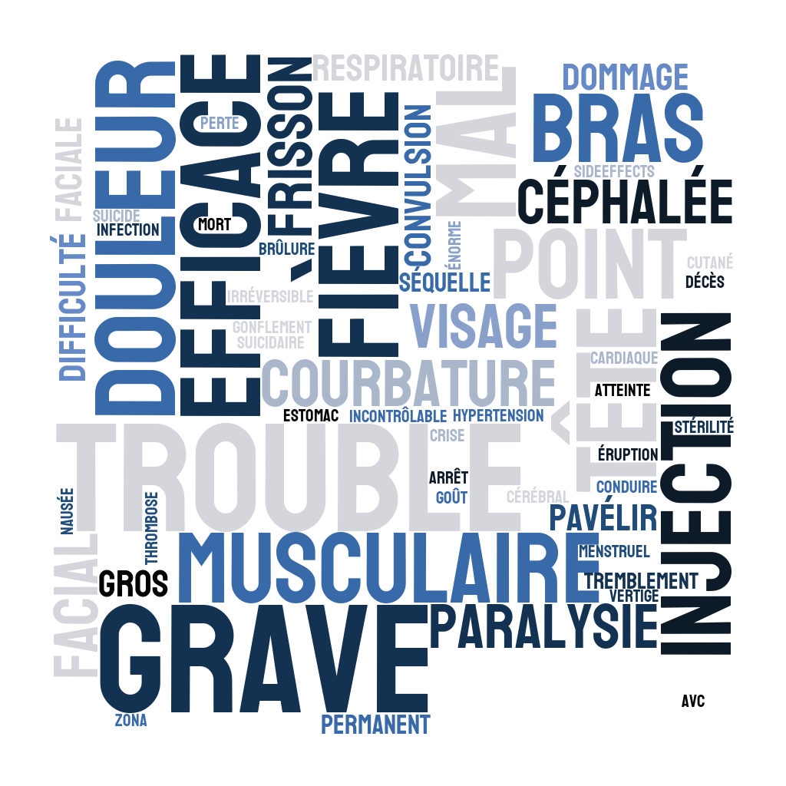 |
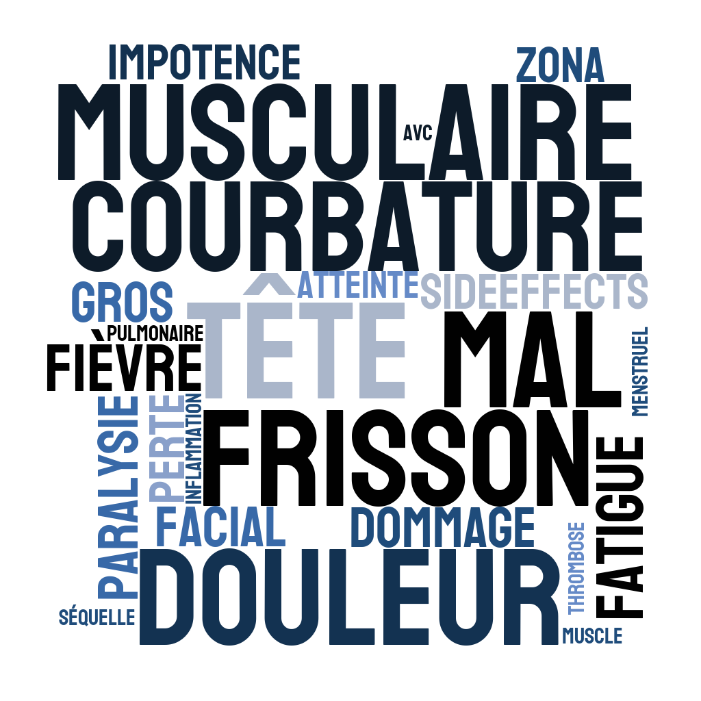 |
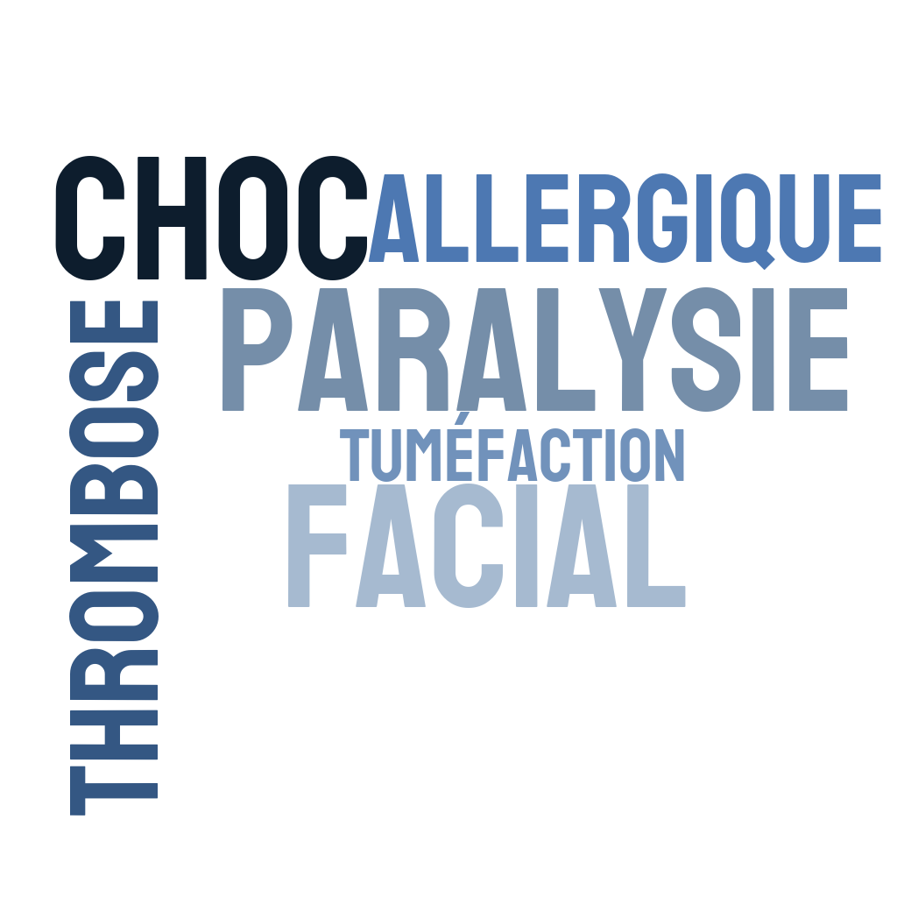 |
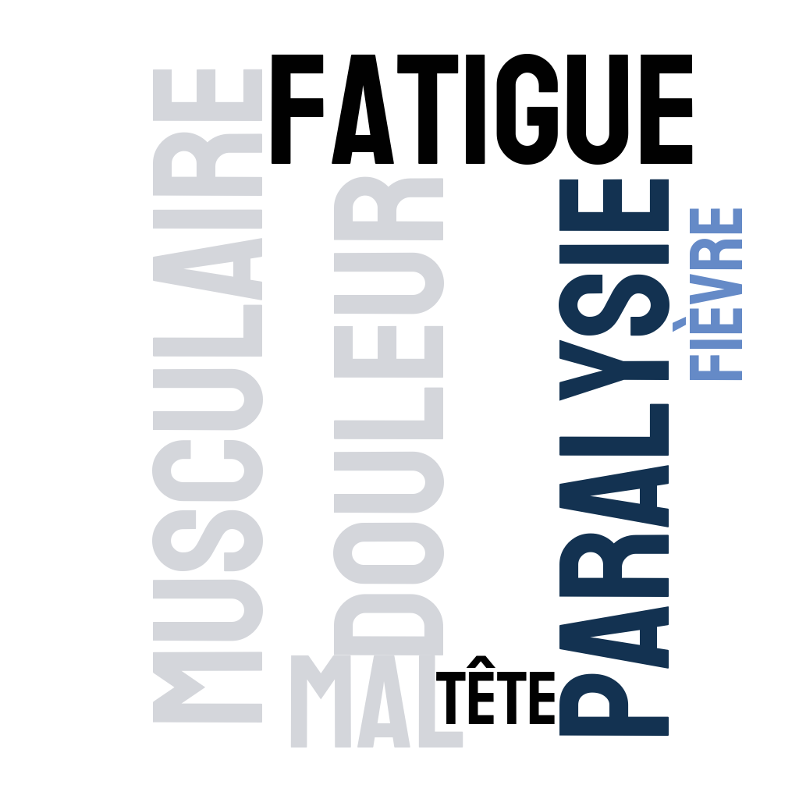 |
Pharmaceutical Companies
| AstraZeneca | BioNTech |
|---|---|
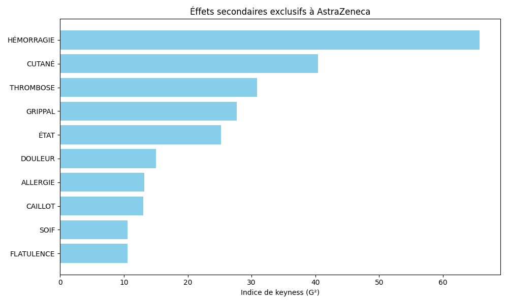 |
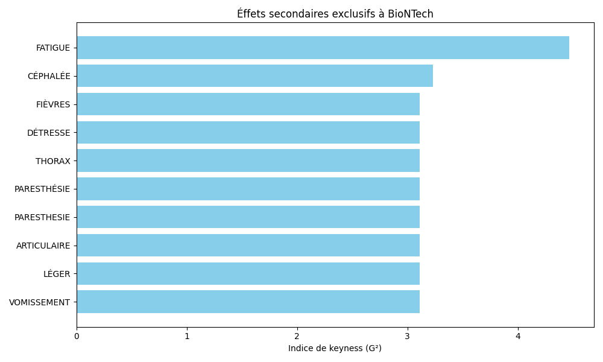 |
| Moderna | Pfizer |
|---|---|
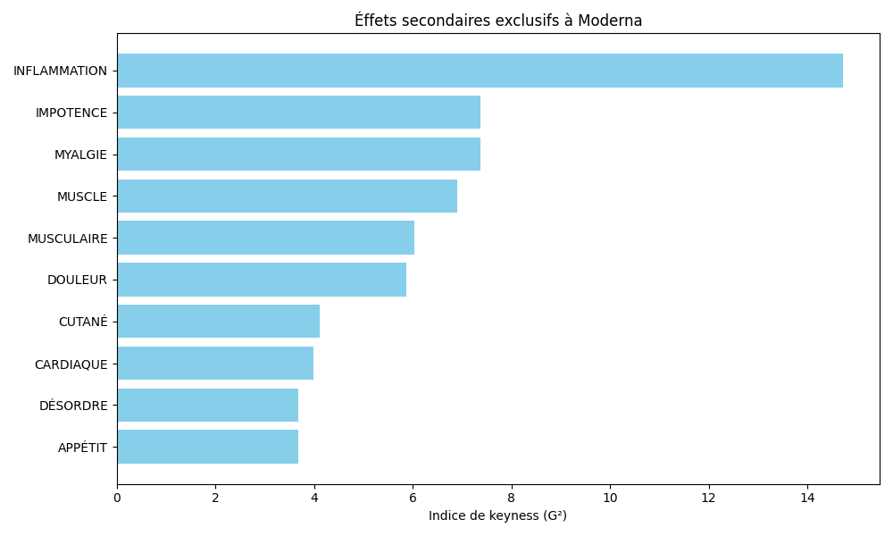 |
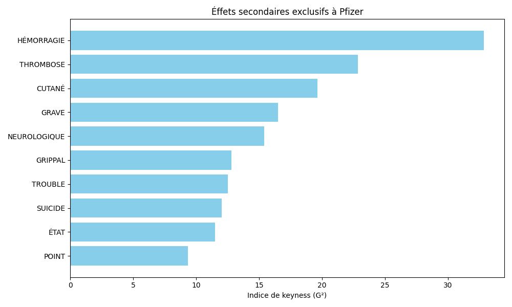 |
Building an Interactive Demo
To make your model accessible, you can build a simple web app using tools like Streamlit.
- Live Demo: https://huggingface.co/spaces/oliviercaron/GLiNER_file
- Source Code: https://github.com/oliviercaron/GliNER_streamlit
- Model on Hugging Face: https://huggingface.co/oliviercaron/gliner-fr-adr-twitter
This allows users to interact with your custom NER model easily.
Part 2: Text Classification for Public Health
What is #SMM4H-HeaRD?
#SMM4H-HeaRD is a series of scientific competitions (shared tasks) in NLP applied to health.
The Objective
To collaboratively develop and evaluate NLP/AI methods for health research, using data from social media and the web.
Public Health Relevance
Traditional pharmacovigilance suffers from significant under-reporting.
Social networks (Reddit, X) are a massive, real-time data source for detecting safety signals.
The Stakes
The US CDC encourages the use of this data. #SMM4H-HeaRD is the benchmark workshop for advancing the state of the art.
Workflow of a ‘Shared Task’
A standardized process for a fair and rigorous comparison of proposed systems.
Data
- Organizers provide annotated data (
train,valid). - Teams register for the tasks.
Development
- Teams develop and train their models.
- Performance on the
validset guides optimizations.
Evaluation
- An unlabeled test set (
test) is released. - Teams have 5 days to submit their predictions on CodaLab.
- CodaLab calculates scores and establishes the final ranking.
Publication
- Each team submits a paper describing its system on OpenReview.
- Peer-reviewed papers are published in the workshop proceedings (here, ICWSM 2025).
The 2025 Edition in Numbers
- 6 tasks: Varied sources, languages, and topics (adverse events, insomnia…).
- 57 teams registered, representing 17 countries.
The Challenges: Tasks 1 & 6
Task 1: Multilingual Detection of Adverse Drug Events (ADE)
Objective
- Binary classification of social media posts to detect Adverse Drug Events (ADE).
- Label
1: Personal mention of an ADE. - Label
0: No mention.
Data and Challenges
- Varied Sources: X, forums, review sites (RuDReC corpus).
- Multilingual: English, French, German, Russian.
- Extreme Class Imbalance: Positive class is a very small minority (5.5% to 10.2%).
- Text Heterogeneity: Posts in FR/DE are much longer (median > 155 words) than in EN/RU (median < 35 words).
Task 6: Detection of Vaccine Adverse Event Mentions (VAEM) on Reddit
Objective
- Classify Reddit posts regarding the shingles vaccine.
- Distinguish a personal experience of an adverse event (VAEM) from general discussion.
- Label
1: Personal account of a reaction. - Label
0: General discussion, question, etc.
Data and Challenges
- Source: Reddit (English).
- Distribution: Balanced dataset (positive class ≈46%).
- Main Challenge: Understanding context to differentiate personal experience from simple mentions.
Concrete Examples
Positive (Label 1)
“Shingles Vaccine: I had my 1st one in December. Felt like I had the flu for a day and a half afterwards.”
Personal account (“I had”) of a symptom (“flu”) linked to the vaccine.
Negative (Label 0)
“Should I get Shingrix at 22?: I didn’t need prior auth, just a prescription sent in by my doctor… I spend all day every day calling pharmacies for other people…”
The post talks about the vaccine but does not report any personal reaction.
Our Approach (ACSS-PSL)
Our Strategy for Task 1 (Multilingual)
Faced with imbalance and multilingualism, we prioritized a robust approach.
Model and Strategy
- Model: XLM-ROBERTa-Large for its cross-lingual capabilities.
- Key Strategy: Class weighting (inverse frequency) in the loss function to reinforce the minority class.
- Preprocessing: None, we relied on the model’s raw capabilities.
Final Result (Test Set)
Our system achieved a Global F1-score of 0.633.
Training Parameters
- Optimizer: AdaFactor
- Learning rate: \(1 \times 10^{-5}\) (cosine scheduler, 10% warmup)
- Epochs: 6 (early stopping on F1, patience 1)
- Batch size: 32 (via 16 gradient accumulation steps)
- Regularization: Dropout at 0.3
- Max length: 256 tokens
- Precision: BF16
Our Strategy for Task 6 (Monolingual)
For this balanced task, we opted for a cross-validation and ensembling strategy to maximize robustness.
Model and Strategy
- Model: DeBERTa-V3-Base, for its excellent performance/size ratio.
- Key Strategy:
- Stratified 5-fold Cross-Validation to train 5 distinct models.
- Ensembling: Final predictions are obtained by probability averaging of the 5 models.
Final Result (Test Set)
Our system achieved an F1-score of 0.951, beating the baseline. Ensembling provided a crucial gain (vs. F1 of 0.942 for the best single model).
Training and Ensembling Process
- Optimizer: AdamW
- Learning rate: \(2 \times 10^{-5}\)
- Epochs: 6 per fold (early stopping on F1, patience 3)
- Batch size: 8
- Max length: 512 tokens
- Precision: FP16
- Decision Threshold: Optimized at 0.8147 on validation probabilities to maximize the F1-score.
Top Performances: Task 1
The Approaches That Made the Difference
The top two teams achieved nearly identical F1 scores (0.709 and 0.708) using recent LLMs, but with very different improvement strategies.
1st: PEI (F1 = 0.709)
- Model: Mistral-Nemo-Instruct-2407.
- Key Strategy: Iterative and Error-Targeted Data Augmentation.
- Loop Process:
- The model is trained initially on the original data.
- It is then used to predict labels for this same training data to identify its own errors.
- Misclassified examples are paraphrased by the LLM itself to create new, semantically identical variants.
- These new data points are added to the training set.
- The model is retrained from scratch on this enriched dataset.
- Result: This method, repeated twice, allowed the model to focus on difficult examples and surpass classic approaches.
2nd: Y2K (F1 = 0.708)
- Model: Gemma 3.
- “MUSIC” Architecture: A two-step approach with self-correction.
- A “Classifier”: A first LLM that gives an initial label to the post.
- A “Judge”: A second LLM that examines the first one’s decision and confirms or rejects it.
- Training the “Judge”: The Judge is trained with the help of a more powerful LLM (Claude 3.7) which provides natural language reasoning to justify good and bad decisions.
- Complementary Techniques:
- Data Augmentation via systematic translation of posts into the other 3 languages.
- Ensembling: The final result is a majority vote between 5 Classifiers and 2 Judges.
Top Performances: Task 6
The Approaches That Made the Difference
For this monolingual and balanced task, the top two teams excelled with radically different strategies: one “classic” but highly optimized, the other based on guided LLM reasoning.
1st: BioNLP1 (F1 = 0.959)
- “Hybrid” Approach: Combination of traditional and neural features.
- Two Types of Representations:
- Lexical Features (TF-IDF): To capture the frequency and importance of words and n-grams (up to 5 words).
- Contextual Embeddings: Semantic representations extracted from a pre-trained RoBERTa-Large model, then fine-tuned on the task data.
- Final Classifier: Both feature vectors (TF-IDF and RoBERTa) are concatenated (“stacking”) and provided as input to a simple yet powerful classifier: a Support Vector Machine (SVM).
- Result: This architecture, combining the best of both worlds (lexical and deep semantic), achieved the competition’s best score.
2nd: GooSeek (F1 = 0.957)
- Model: Llama 3.1-8B-Instruct.
- Key Strategy: Prompting with “Chain-of-Thought” (CoT) in zero-shot mode.
- The CoT Prompt: The LLM is not simply asked to classify, but to follow an explicit reasoning process in 4 steps for each post:
- Check for indicators of a first-person experience (e.g., “I”, “my”).
- Look for an explicit mention of receiving the vaccine.
- Identify the mention of side effects.
- Evaluate the context and classify “0” if the language is ambiguous.
- Result: Guidance via CoT proved crucial. An ablation study showed that this technique significantly improved performance, much more so than adding examples (few-shot).
Example of Feature Concatenation (Stacking)
For a given post, two distinct vector representations are calculated.
1. Initial Vectors
TF-IDF Vector
(Dimension \(d_{tfidf}\)) \[v_{tfidf} = [0.04, 0.50, 0.00, ..., -0.90]\]
RoBERTa Embedding Vector
(Dimension \(d_{emb}\)) \[v_{emb} = [0.44, 0.45, -0.89, ..., 0.12]\]
2. Concatenation
They are then placed end-to-end to form a single large vector (stacking).
Final Vector
(Dimension \(d_{tfidf} + d_{emb}\)) \[v_{stacked} = [ \underbrace{0.04, 0.50, ..., -0.90}_{v_{tfidf}}, \underbrace{0.44, 0.45, ..., 0.12}_{v_{emb}} ]\]
This final, richer vector is then provided to the SVM classifier.
💡 The RBF Kernel
The trick of the RBF (Radial Basis Function) Kernel is to measure the similarity between posts. Instead of trying to separate data with a straight “line” in the initial space, it projects them into a higher dimension where they become easier to separate by a “plane”.
The equation calculating this similarity is: \[K(x_i, x_j) = \exp(-\gamma \|x_i - x_j\|^2)\]
- \(K(x_i, x_j)\): Calculates a similarity score between two posts, \(x_i\) and \(x_j\).
- \(\|x_i - x_j\|^2\): Measures the squared distance between the two vectors. The “closer” they are, the smaller this term is.
- \(\gamma\) (gamma): A parameter that adjusts the influence of each point (can be seen as a “zoom”).
- \(\exp(...)\): The exponential function transforms this distance into a similarity score (between 0 and 1). If the distance is zero, similarity is maximal (1).
In short, the SVM uses this measure to create a complex, non-linear decision boundary, which is very effective for this type of data.
Feedback / Lessons Learned
The Crucial Importance of Rigorous Evaluation
Participating in a shared task imposes rigor that goes beyond a simple train_test_split.
1. Cross-Validation
- Lesson: Essential for datasets of modest size.
- Benefits:
- Uses all data (training & validation).
- Provides a more robust performance estimate.
- Allows for powerful ensembling.
2. Threshold Optimization
- Lesson: The default threshold (0.5) is rarely optimal for the F1-score.
- Practice: One must search for the threshold that maximizes the target metric on the validation set probabilities. This allowed a gain of 0.2 points on Task 1.
3. Ablation Studies
- Discovery: Removing system components to measure their individual contribution.
- Example (GooSeek): An ablation study proved that Chain-of-Thought (CoT) prompting improved performance, justifying their architecture choice.
The Participation Process and Tools
Beyond modeling, a large part of the work is logistical and technical.
The Submission Process
- Receipt of
train&validdata. - Receipt of the unlabeled
testfile. - Generation of the
predictions.csvfile with our best model. - Upload of a
.ziparchive to CodaLab.
Key Platforms
- CodaLab: Competition platform for submission and automatic evaluation. The final arbiter.
- OpenReview: Platform for paper submission and the peer-review process.
- GitHub: Essential for sharing reproducible code.
Experiment Management
- Lesson: It is vital to track every experiment (model, hyperparameters, score).
- Tools: A spreadsheet is a good start. Tools like WandB (Weights & Biases) allow for professional tracking, comparison, and visualization of results.
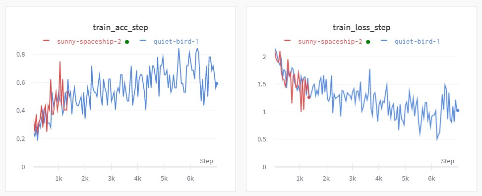
Conclusion
Summary and Next Steps
Summary of Our Participation
- Competitive Results, with a ranking above the median for both tasks.
- Task 1 (Multilingual ADE): F1 of 0.633. Honorable, but data heterogeneity and imbalance remain major challenges.
- Task 6 (Shingles VAEM): F1 of 0.951. A success. Our strategy (DeBERTa + CV/Ensembling) proved very robust on noisy Reddit data.
Trends and Areas for Improvement
- General Trend: LLMs are the new norm (used by 18/29 teams).
- Ideas for Task 1:
- Explore data augmentation via LLMs.
- Fine-tune a recent multilingual LLM (Mistral, Gemma) with PEFT techniques.
- Ideas for Task 6:
- Test a larger version of the model (DeBERTa-V3-Large).
- Combine our approach with heuristics generated by an LLM.
Oxford Workshop: LLMs for Survey Imputation
The challenge and data (Oxford, “LLMs for Social Sciences”)
- Goal: predict missing answers to 33 target questions (
t_Q*) from the WVS survey using the other answers.
- Data:
train.csv(5,000 respondents × 266 variables) +wvs_answer_categories_VERBATIM.json(question text + allowed labels).
Feature importance we computed (before ranking)
- Goal: quantify how predictive each non-target question is for every target (
t_Q*) before prompting. - Inputs: full
train.csv(5,000 respondents, 33 targets) + per-question levels fromwvs_answer_categories_VERBATIM.json(seeoxford_llms/Sans titre.qmd). - Preprocessing (R): normalize tokens, harmonize answer variants (e.g., Strongly agree/Agree strongly), detect Likert/binary vs nominal, and align NA tokens.
- Metrics computed (per target/feature pair):
- Mutual Information (captures non-linear dependence).
- Cramer’s V (strength for nominal × ordinal).
- Theil’s U (asymmetric association for categorical vars).
- Aggregation: combine the three association metrics into a single standardized
scoreper pair (mix of normalized MI, Cramér’s V, Theil’s U), then rank features per target. - Outputs:
rank_all_questions.csv(per-target rankings) andmost_popular_questions_features.csv(cross-target signals).
Picking the pivot questions (statistical correlation)
rank_all_questions.csvblends mutual information, Theil’s U, and Cramer’s V into a score for each (target, feature), then ranks the most predictive questions.
Target t_Q19 (question: “Would you prefer not to have people of a different race as neighbors?”) |
MI | TheilU | CramerV | Score |
|---|---|---|---|---|
| N_REGION_ISO – region of residence | 0.135 | 0.294 | 0.515 | 0.268 |
| Q21 – avoid immigrant neighbors? | 0.113 | 0.245 | 0.513 | 0.232 |
| Q23 – avoid neighbors of another religion? | 0.107 | 0.234 | 0.510 | 0.223 |
| Q223 – voting intention | 0.103 | 0.227 | 0.458 | 0.213 |
| Q26 – avoid neighbors of another language? | 0.099 | 0.216 | 0.497 | 0.209 |
Strongest cross-target features (33 targets)
| Feature | Role (summary) | Target coverage | Mean rank | Strength score |
|---|---|---|---|---|
| N_REGION_ISO | Current region | 33/33 | 1.3 | 649 |
| Q223 | Party/political leaning | 33/33 | 3.2 | 588 |
| Q290 | Ethno/racial identity | 33/33 | 4.5 | 546 |
| Q267 | Mother’s birth country | 33/33 | 6.0 | 494 |
| Q268 | Father’s birth country | 33/33 | 6.5 | 478 |
| Q266 | Respondent birth country | 33/33 | 7.8 | 434 |
| Q272 | Language spoken at home | 33/33 | 9.3 | 387 |
| B_COUNTRY | Country of residence | 33/33 | 9.9 | 365 |
Concrete example: prompt inputs (top 10 by score)
- Respondent 528070145 (train.csv) for target
t_Q19; features are the top 10 for this target inrank_all_questions.csv.
| Key feature | Provided answer |
|---|---|
| Region (N_REGION_ISO) | Overijssel |
| Immigrant neighbors? (Q21) | No answer |
| Neighbors of another religion? (Q23) | No answer |
| Party/affinity (Q223) | No answer |
| Neighbors of another language? (Q26) | No answer |
| Racial identity (Q290) | Don’t know |
| Birth country (Q266) | Netherlands |
| Father born where? (Q268) | Netherlands |
| Mother born where? (Q267) | Netherlands |
| Country of residence (B_COUNTRY) | Netherlands |
Full persona text (same respondent, t_Q19)
The respondent currently resides in Overijssel, Netherlands, and was born in the Netherlands, as were both of their parents. However, the respondent did not provide answers to several questions regarding their preferences about neighbors of different backgrounds, including immigrants, people of different religions, and those who speak different languages. Additionally, they did not indicate their voting preferences for a national election or express their identification regarding racial belonging or ethnic group. This lack of information suggests a reluctance or uncertainty in discussing these topics, which limits the ability to form a comprehensive profile of their views and beliefs.
Full prompt (persona + target)
--- SYSTEM (Persona) ---
You are an expert behavioral analyst. Your task is to write a concise, narrative description of a survey respondent based ONLY on the provided answers.
CRITICAL RULES:
1. **Stick to the Facts**: Base your description ONLY on the provided Question/Answer pairs. Do not invent information.
2. **Handle Missing Data**: If answers are vague or non-committal (e.g., 'No answer', 'Don't know'), state this limitation directly in your analysis. Do NOT make strong inferences from missing data.
3. **Format**: Write a single, fluid paragraph of 100-150 words. The output must be plain text, with no Markdown, headers, lists, or bolding.
4. **No Filler**: Do NOT add any conversational remarks, disclaimers, or hashtags. Your entire output must be the analysis paragraph itself.
--- USER (Persona) ---
Create a detailed profile for the respondent based on the following survey answers:
Question: Which region do you currently live in?
Answer: Overijssel
Question: Would you prefer not to have immigrants/foreign workers as neighbors?
Answer: No answer
Question: Would you prefer not to have people of a different religion as neighbors?
Answer: No answer
Question: If there were a national election tomorrow, for which party would you vote?. If you do not know, which party appeals to you most?
Answer: No answer
Question: Would you prefer not to have people who speak a different language as neighbors?
Answer: No answer
Question: How do you identify when it comes to Racial belonging/ ethnic group in your country?
Answer: Don't know
Question: In which country were you born?
Answer: Netherlands
Question: In which country was your father born? List of codes in Annex
Answer: Netherlands
Question: In which country was your mother born?
Answer: Netherlands
Question: Which country are you currently living in?
Answer: Netherlands
--- GENERATED PERSONA (Example) ---
The respondent currently resides in Overijssel, Netherlands, and was born in the Netherlands, as were both of their parents. However, the respondent did not provide answers to several questions regarding their preferences about neighbors of different backgrounds, including immigrants, people of different religions, and those who speak different languages. Additionally, they did not indicate their voting preferences for a national election or express their identification regarding racial belonging or ethnic group. This lack of information suggests a reluctance or uncertainty in discussing these topics, which limits the ability to form a comprehensive profile of their views and beliefs.
--- SYSTEM (Target) ---
You are an expert in social sciences. Your task is to predict a respondent's answer to a survey question based on their detailed profile and relevant examples.
STRICT OUTPUT RULES:
- Choose EXACTLY ONE option from the provided list.
- Output ONLY the selected option, VERBATIM, with no explanation or punctuation.
--- USER (Target) ---
Persona Profile:
The respondent currently resides in Overijssel, Netherlands, and was born in the Netherlands, as were both of their parents. However, the respondent did not provide answers to several questions regarding their preferences about neighbors of different backgrounds, including immigrants, people of different religions, and those who speak different languages. Additionally, they did not indicate their voting preferences for a national election or express their identification regarding racial belonging or ethnic group. This lack of information suggests a reluctance or uncertainty in discussing these topics, which limits the ability to form a comprehensive profile of their views and beliefs.
Target Question:
Would you prefer not to have people of a different race as neighbors?
Options:
- No answer
- No
- Yes
- Missing
- Don´t know
Your Prediction:How the few-shot example is inserted (real data)
- One-hot the top-20 ranked features for
t_Q19, compute Euclidean distance, pick the nearest neighbor with a known label. - Example: respondent 528070145 (to predict) vs nearest neighbors (distance 5/10 features; all have
t_Q19 = No).
| Feature | 528070145 (to predict) | 528070507 | 528071611 | 528070109 |
|---|---|---|---|---|
| N_REGION_ISO | Overijssel | Overijssel | Overijssel | Overijssel |
| Q21 – immigrant neighbors? | No answer | No | No | Yes |
| Q23 – different religion neighbors? | No answer | No | No | Yes |
| Q223 – party preference | No answer | NLD: Party for Freedom | NLD: Volt Europe | NLD: Party for Freedom |
| Q26 – different language neighbors? | No answer | No | No | Yes |
| Q290 – racial belonging | Don’t know | NL: Caucasian white | NL: Caucasian white | NL: Caucasian white |
| Q266 – birth country | Netherlands | Netherlands | Netherlands | Netherlands |
| Q268 – father’s birth country | Netherlands | Netherlands | Netherlands | Netherlands |
| Q267 – mother’s birth country | Netherlands | Netherlands | Netherlands | Netherlands |
| B_COUNTRY – current country | Netherlands | Netherlands | Netherlands | Netherlands |
| t_Q19 (target label) | unknown | No | No | No |
The neighbor is injected into the target prompt as:
Exemple de cas similaire:
---
Profile (top features):
Question: Which region do you currently live in?
Answer: Overijssel
Question: Would you prefer not to have immigrants/foreign workers as neighbors?
Answer: No
Question: Would you prefer not to have people of a different religion as neighbors?
Answer: No
Question: If there were a national election tomorrow, for which party would you vote?. If you do not know, which party appeals to you most?
Answer: NLD: Party for Freedom
Question: Would you prefer not to have people who speak a different language as neighbors?
Answer: No
Question: How do you identify when it comes to Racial belonging/ ethnic group in your country?
Answer: NL: Caucasian white
Target Question:
Would you prefer not to have people of a different race as neighbors?
Known answer: No
---Prompting pipeline (persona + few-shot)
- 1. Select
TOP_K_FEATURES(by score) for each target → smaller context, less noise. - 2. Persona: system prompt “behavioral analyst” + user prompt listing
Question/Answer→ factual 100–150 word paragraph. - 3. Few-shot: one-hot encode selected features, Euclidean distance to find 1 similar respondent → prepend to the target prompt as “Exemple de cas similaire” (profile Q/A + known target).
- 4. Target prompt: persona + example(s) + allowed options (e.g.,
t_Q19:No answer,No,Yes,Missing,Don’t know) → single choice, validated against the list. - 5. Fallback: normalize output (strip quotes, closest match) to stay within allowed labels.
References